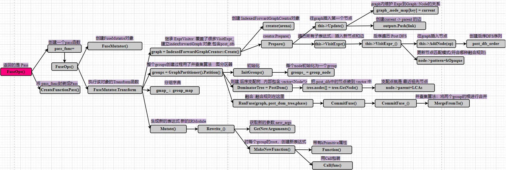

# 前言
本系列文章将从代码和流程图入手，详细介绍 TVM AI 编译器的编译流程。本文章为第五篇，对应的 TVM 版本为当前最新版本 1.7。
网络上有不少 TVM 工程的教程资源，如果本博客也是其他教程的简单重复的话，则网络的角落里又多了一份纯粹的空间占用者。所以我在想，本文章有什么特点才值得一看呢？我觉得有两个优点: 1、本文从代码出发，不会泛泛而谈，能够从细节了解 TVM；2、自认为结构流程图画的不错，能够从整体上把握 TVM 的脉络。所以，也许值得一看呢。
本篇文章介绍 TVM FuseOps 算子融合 Pass。文章 《【TVM】通过代码学习编译流程【4】BuildRelay》 已经介绍了函数 OptimizeImpl 。 OptimizeImpl 收集并执行大量针对高级中间表示 Relay IRModule 的优化 Pass。本篇文章将选择其中非常重要的一个 Pass：FuseOps 算子融合 Pass 进行介绍。
因为代码量巨大，模型编译会分成若干篇文章进行解析。接下来的若干篇都会介绍 BuildRelay 函数 及其调用的子函数。
作为初学者，错误在所难免，还望不吝赐教。
# Python 脚本
这里提供一个简单的 Python 脚本，调用 TVM Python 前端，实现 onnx 模型的编译过程。tvm 通过代码学习编程流程系列文章将基本采用这个脚本帮助追踪代码。
import onnx | |
from PIL import Image | |
import numpy as np | |
import tvm.relay as relay | |
import tvm | |
from tvm.contrib import graph_executor | |
###################################### 路径信息 ########################################## | |
model_path = "/home/xianmu/module/resnet18.onnx" | |
save_path = "/home/xianmu/module/pythonSave/" | |
onnx_model = onnx.load(model_path) | |
################################## 图片信息 ############################################## | |
img_path = "/home/xianmu/.tvm_test_data/data/imagenet_cat.png" | |
# Resize it to 224x224 | |
resized_image = Image.open(img_path).resize((224, 224)) | |
img_data = np.asarray(resized_image).astype("float32") | |
# Our input image is in HWC layout while ONNX expects CHW input, so convert the array | |
img_data = np.transpose(img_data, (2, 0, 1)) | |
# Normalize according to the ImageNet input specification | |
imagenet_mean = np.array([0.485, 0.456, 0.406]).reshape((3, 1, 1)) | |
imagenet_stddev = np.array([0.229, 0.224, 0.225]).reshape((3, 1, 1)) | |
norm_img_data = (img_data / 255 - imagenet_mean) / imagenet_stddev | |
# Add the batch dimension, as we are expecting 4-dimensional input: NCHW. | |
img_data = np.expand_dims(norm_img_data, axis=0) | |
#################################### 模型编译 ########################################### | |
input_name = "data" | |
target = tvm.target.Target(target="llvm", host="llvm") | |
shape_dict = {input_name: img_data.shape} | |
mod, params = relay.frontend.from_onnx(onnx_model, shape_dict, export_node_renamed_model_path=save_path) # 创建 IRModule 高级 Relay IR | |
with tvm.transform.PassContext(opt_level=3): | |
lib = relay.build(mod, target=target, params=params) # 创建 GraphExecutorFactoryModule | |
####################################### 模型保存 ######################################## | |
# save | |
# 保存编译后的库文件（.so） | |
lib_fname = save_path + "mod.so" | |
lib.get_lib().export_library(lib_fname) | |
# 保存模型参数（.params） | |
params_fname = save_path + "mod.params" | |
with open(params_fname, "wb") as param_file: | |
param_file.write(relay.save_param_dict(lib.get_params())) | |
# 保存 JSON 格式的计算图（.json） | |
json_fname = save_path + "mod.json" | |
with open(json_fname, "w") as json_file: | |
json_file.write(lib.get_executor_config()) | |
dev = tvm.device(str(target), 0) | |
module = graph_executor.GraphModule(lib["default"](dev)) # graph_executor.GraphModule | |
############################ 运行 ########################################## | |
module.set_input(input_name, img_data) | |
module.run() | |
output_shape = (1, 1000) | |
tvm_output = module.get_output(0, tvm.nd.empty(output_shape)).numpy() | |
print(tvm_output) |
# FuseOps 示例
文章 《【TVM】通过代码学习编译流程【4】BuildRelay》 已经介绍了函数 OptimizeImpl 。 OptimizeImpl 收集并执行大量针对高级中间表示 Relay IRModule 的优化 Pass。本篇文章将选择其中非常重要的一个 Pass：FuseOps 算子融合 Pass 进行介绍。
先来看看算子融合的效果。对前述 Python 脚本做一下小修改，在 35 行 from_onnx() 函数后面增加下面几行代码：
from tvm.relay import transform | |
print("===========================================") | |
print(mod) # 算子融合 Pass 之前的 IRModule | |
mod = transform.FuseOps()(mod) | |
print("===========================================") | |
print(mod) # 算子融合 Pass 之后的 IRModule |
算子融合之前：
%+数字 表示临时变量； @+字母 表示全局变量。
Relay IRModule 只有一个 main 函数，main 函数中包含许多单个的算子表达式，这些表达式组合成完整的图结构。
def @main(%data: Tensor[(1, 3, 224, 224), float32]) -> Tensor[(1, 10), float32] { | |
%0 = nn.conv2d(%data, meta[relay.Constant][0], padding=[0, 0, 0, 0], channels=4, kernel_size=[3, 3]) ; | |
%1 = nn.bias_add(%0, meta[relay.Constant][1] ); | |
%2 = nn.relu(%1) ; | |
%3 = nn.max_pool2d(%2, pool_size=[3, 3], strides=[2, 2], padding=[1, 1, 1, 1]) ; | |
%4 = nn.conv2d(%3, meta[relay.Constant][2], padding=[0, 0, 0, 0], channels=5, kernel_size=[3, 3]) ; | |
%5 = nn.bias_add(%4, meta[relay.Constant][3] ) ; | |
... | |
} |
算子融合之后：
TVM 将原本独立的 nn.conv2d ， nn.bias_add ， %2 = nn.relu 封装成了复合表达式 %5 = fn (...) ，复合表达式里面包含 nn.conv2d ， nn.bias_add ， %2 = nn.relu 三个算子。 之后通过 %6 = %5(...) 来调用执行该复合表达式。
def @main(%data: Tensor[(1, 3, 224, 224), float32]) -> Tensor[(1, 10), float32] { | |
%5 = fn (%p05: Tensor[(1, 3, 224, 224), float32] , %p12: Tensor[(4, 3, 3, 3), float32] , %p22: Tensor[(4), float32], Primitive=1) -> Tensor[(1, 4, 222, 222), float32] { | |
%3 = nn.conv2d(%p05, %p12, padding=[0, 0, 0, 0], channels=4, kernel_size=[3, 3]); | |
%4 = nn.bias_add(%3, %p22) ; | |
nn.relu(%4) | |
} ; | |
%6 = %5(%data, meta[relay.Constant][0], meta[relay.Constant][1] ) ; | |
... | |
} |
总之，该例子展示了 FuseOps() 匹配到了连续的 nn.conv2d ， nn.bias_add ， %2 = nn.relu 算子，并在 Relay IRModule 中通过复合表达式表示。
# FuseOps

FuseOps 函数如下所示。
FuseOps 函数目的是创建一个 FunctionPass 完成 IRModule 的优化。可以通过文章《【TVM】通过代码学习类【3.5】Pass》再回顾一下 FunctionPass 。
FunctionPass 的关键执行函数是传入的 pass_func 。
pass_func 里面有很多参数的配置，我们直接看含有六个参数的重载函数： FuseOps() 。
Pass FuseOps(int fuse_opt_level) { | |
runtime::TypedPackedFunc<Function(Function, IRModule, PassContext)> pass_func = // Pass 的关键执行函数 | |
[=](Function f, IRModule m, PassContext pc) { | |
bool link_params = false; | |
Executor executor = | |
m->GetAttr<Executor>(tvm::attr::kExecutor).value_or(NullValue<Executor>()); | |
link_params = executor.defined() | |
? executor->attrs.GetAttr<Bool>("link-params").value_or(Bool(link_params)) | |
: link_params; | |
link_params = pc->GetConfig("relay.FuseOps.link_params", Bool(link_params)).value(); | |
int opt_level = fuse_opt_level == -1 ? pc->opt_level : fuse_opt_level; | |
auto max_fuse_depth = pc->GetConfig("relay.FuseOps.max_depth", Integer(kMaxFusedOps)); | |
auto target = Target::Current(); | |
size_t max_function_args = | |
(target.defined()) | |
? target->GetAttr<Integer>("max_function_args", Integer(0)).value().IntValue() | |
: 0; | |
return Downcast<Function>(FuseOps(f, opt_level, max_fuse_depth.value().IntValue(), | |
max_function_args, link_params, m)); | |
}; | |
return CreateFunctionPass(pass_func, 0, "FuseOps", {"InferType"}); // 返回 FunctionPass | |
} |
含有六个参数的重载函数： FuseOps() ，函数内部初始化了类 FuseMutator ，并直接调用该类的 Transform() 成员函数。
Expr FuseOps(const Expr& expr, int fuse_opt_level, size_t max_fuse_depth, size_t max_function_args, | |
bool link_params, const IRModule& module) { | |
return FuseMutator(fuse_opt_level, max_fuse_depth, max_function_args, link_params) | |
.Transform(expr); | |
} |
Transform() 函数有三个部分：
IndexedForwardGraphCreator::Create : 创建前序图结构（只有当前节点指向后续节点的单向边）。顺带构建一个由 “逆深度优先搜索” 序列 post_dfs_order ，实际上是个节点顺序执行序列。
GraphPartitioner().Partition() : 创建后序支配树，匹配算子，通过并查集算法融合 group。
this->Mutate(body) : 构建新的算子融合后的 IRModule 抽象语法树结构。
// Run the transform | |
Expr Transform(const Expr& body, int fuse_opt_level, size_t max_fuse_depth, bool link_params) { | |
// setup the group map. | |
auto graph = IndexedForwardGraphCreator::Create(&arena_, body); | |
auto groups = GraphPartitioner(&arena_, fuse_opt_level, max_fuse_depth, max_function_args_) | |
.Partition(graph); | |
for (size_t nid = 0; nid < graph.post_dfs_order.size(); ++nid) { | |
ICHECK(graph.post_dfs_order[nid]->ref != nullptr); | |
gmap_[graph.post_dfs_order[nid]->ref] = groups[nid]; | |
} | |
// The following line can be used for debug. | |
// this->DebugDumpGroup(body); | |
return this->Mutate(body); | |
} |
# IndexedForwardGraphCreator
IndexedForwardGraphCreator::Create 函数如下所示。
该函数创建前序图结构（只有当前节点指向后续节点的单向边），完成主要功能的是 Prepare(const Expr& body)
this->Update() 功能是创建当前节点 node ，如果有父节点，则创建一条指向父节点的边 edge 。
Prepare(const Expr& body) 函数中， this->Update(); 创建首个根节点，之后调用 this->VisitExpr(body) ，遍历抽象语法树，逐个创建节点和边，构建前序图结构。（ IndexedForwardGraphCreator 类继承了 ExprVisitor 类， ExprVisitor 类是 TVM 提供的帮助遍历抽象语法树的工具，只需要重写 VisitExpr_() 函数，就读取或修改语法树相应的节点，如 void VisitExpr_(const CallNode* call) final {} ）
// Creator of post dominator tree of the dataflow | |
class IndexedForwardGraphCreator : private ExprVisitor { | |
public: | |
static IndexedForwardGraph Create(support::Arena* arena, const Expr& body) { | |
IndexedForwardGraphCreator creator(arena); | |
return creator.Prepare(body); | |
} | |
private: | |
explicit IndexedForwardGraphCreator(support::Arena* arena) : arena_(arena) {} | |
IndexedForwardGraph Prepare(const Expr& body) { // 创建前序图结构 | |
this->Update(body, nullptr, kOpaque); // 创建首个根节点 | |
this->VisitExpr(body); // 遍历抽象语法树，逐个创建节点和边，构建前序图结构 | |
return std::move(graph_); | |
} | |
private: | |
/*! \brief allocator of all the internal node object */ | |
support::Arena* arena_; | |
// The output. | |
IndexedForwardGraph graph_; // Prepare 函数创建的图结构类 |
以下是 IndexedForwardGraph 类，包含节点 node 、边 edge ，通过 LinkedList<Edge> outputs; 构建链接关系。
class IndexedForwardGraph { | |
public: | |
struct Edge { | |
/*! \brief The corresponding node */ | |
Node* node{nullptr}; | |
/*! \brief The respective pattern of this op */ | |
OpPatternKind pattern{kOpaque}; | |
}; | |
/*! \brief A node in the graph. */ | |
struct Node { // | |
/*! \brief weak reference to the corresponding edge. */ | |
const tvm::Object* ref{nullptr}; | |
/*! \brief The index of the node in topological order. */ | |
size_t index{0}; | |
/*! \brief Whether this node is referenced by external source */ | |
bool extern_ref{false}; | |
/*! \brief The general pattern in the node */ | |
OpPatternKind pattern{kOpaque}; | |
/*! \brief The outputs of the node. */ | |
LinkedList<Edge> outputs; | |
}; | |
/*! \brief The node map that maps node to graph */ | |
std::unordered_map<const tvm::Object*, Node*> node_map; | |
/*! \brief All the nodes in post DFS order */ | |
std::vector<Node*> post_dfs_order; | |
} |
# GraphPartitioner
GraphPartitioner().Partition() 函数如下所示。
this->InitGroups(graph) : 初始化，即将图中所有节点都初始化为一个 group。
DominatorTree::PostDom() : 构建后支配树
this->RunFuse : 执行融合
std::vector<GraphPartitioner::Group*> GraphPartitioner::Partition( | |
const IndexedForwardGraph& graph) { | |
this->InitGroups(graph); // 每个节点初始化为一个 group | |
if (opt_level_ == 0) return std::move(groups_); | |
// get post dominator tree | |
auto post_dom_tree = DominatorTree::PostDom(arena_, graph); // 构建后支配树 | |
// run fusion algorithm. | |
for (int phase = 0; phase < 3; ++phase) { // 分三个阶段执行融合 | |
this->RunFuse(graph, post_dom_tree, phase); | |
} | |
return std::move(groups_); | |
} |
Post dominator tree（后支配树）是程序分析中的一种数据结构，主要用于编译器优化和静态分析。在控制流图（CFG, Control Flow Graph）中，一个节点 B 后支配另一个节点 A，当且仅当从 A 到程序结束点的所有路径都必须经过 B。后支配树以程序的退出点为根，每个节点指向它的直接后支配者。后支配树可以帮助识别哪些操作可以被安全地融合在一起。如果两个或多个操作属于同一个后支配节点，这意味着它们之间没有其他控制流分支，因此可以被看作是顺序执行的，并且有可能被融合。
this->RunFuse : 根据不同匹配模式 pattern 融合 group。复合匹配模式的 group 通过 MergeFromTo 函数进行合并。合并过程是找到两个 group 的根，将其中一个 root 作为另一个的后续节点 child->parent = parent; 。
void GraphPartitioner::MergeFromTo(Group* child, Group* parent) { | |
child = child->FindRoot(); | |
parent = parent->FindRoot(); | |
if (child == parent) return; | |
// update the number of nodes of the parent group | |
parent->num_nodes += child->num_nodes; | |
parent->args_num += child->args_num; | |
child->parent = parent; // 合并 group | |
// update anchor ref and pattern | |
if (child->anchor_ref != nullptr) { | |
ICHECK(parent->anchor_ref == nullptr); | |
parent->anchor_ref = child->anchor_ref; | |
parent->pattern = CombinePattern(child->pattern, parent->pattern); | |
} | |
} |
# Mutate(body)
Mutate(body) 构建算子融合后的 IRModule 抽象语法树结构。
Mutate(body) 函数所在的类 FuseMutator 派生自祖先类 ExprMutator （抽象语法树修改工具类），只需要重写 Rewrite_() 函数就能完成对 IRModule 的修改。
以 Rewrite_(const CallNode* call, const Expr& post) 为例，在遍历到 Call 节点时正常创建 Call 节点 。若如果该节点是 group 的根节点，则将该 Call 节点子图分支封装成 function。
// Transform calls. | |
Expr Rewrite_(const CallNode* call, const Expr& post) { | |
if (call->op.as<OpNode>()) { | |
static auto fnoncomputational = Op::GetAttrMap<TNonComputational>("TNonComputational"); | |
static auto fqnncanonicalize = Op::GetAttrMap<FTVMLegalize>("FTVMQnnCanonicalize"); | |
Op op = Downcast<Op>(call->op); | |
if (fnoncomputational.get(op, false) && !fqnncanonicalize.count(op)) { | |
return ExprMutator::VisitExpr_(call); | |
} | |
// If it is a primitive op call | |
// then we must have a group assignment for it already. | |
ICHECK(gmap_.count(call)); | |
if (call->op == stop_fusion_op) { | |
return ExprMutator::VisitExpr(call->args[0]); | |
} | |
auto* ret_group = gmap_.at(call)->FindRoot(); | |
Array<Expr> new_args = GetNewArguments(call->args, ret_group); | |
// 正常创建 Call 节点 | |
auto new_call = Call(call->op, new_args, call->attrs, call->type_args, call->span); | |
if (ret_group->root_ref == call) { // 如果该节点是 group 的根节点 | |
// This is the root of the group | |
// create the new call node. | |
return MakeNewFunction(ret_group, call->checked_type(), new_call); // 将 Call 节点子图分支封装成 function | |
} else { | |
// This is an intermediate node of a fused function | |
// simply return the new call. | |
return std::move(new_call); | |
} | |
} else { | |
return ExprMutator::VisitExpr_(call); | |
} | |
} |
# 后记
本博客目前以及可预期的将来都不会支持评论功能。各位大侠如若有指教和问题，可以在我的 github 项目 或随便一个项目下提出 issue，或者知乎 私信，并指明哪一篇博客，我看到一定及时回复。